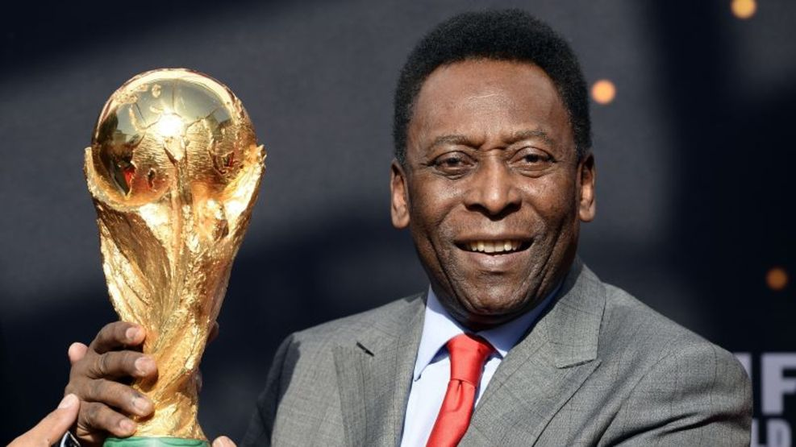

Edson Arantes
Antes de que Pelé conquistara el mundo, solo existía el niño nacido el 23 de octubre de 1940, en Três Corações, hijo de Celeste y João Ramos do Nascimento. Hermano de Jair (la Zoca) y María Lúcia. El nombre fue un homenaje al genio estadounidense Thomas Edison, inventor de la bombilla eléctrica. Poco sabían Celeste y Dondinho que Dico, como lo llamaban en casa, se sumaría a la galería de grandes nombres de la historia. Edison, que con el tiempo se olvidó la "i", convirtiéndose en Edson, nació en la cuna de la pelota. Dondinho, su padre, era jugador profesional, con paso por el Atlético-MG. Y las idas y venidas de la profesión llevaron a la familia Nascimento a Bauru, en el interior de São Paulo, en 1945. Inspirado por su padre, el niño Edson siempre buscaba jugar con sus amigos. Primero, se ganó el apodo de Gasolina. Y, por admirar a un compañero de equipo de Dondinho, el portero Bilé, recibió el famoso apodo. De niño, Edson se imaginaba a sí mismo como el ídolo de las calles y con la dicción y la imaginación todavía inocentes de un niño pequeño, gritaba: "¡Ahí va 'Pilé'!". Luego llegaría el apodo de Pelé. Al principio, al niño no le gustó. Pero no había manera. Edson y Pelé se fusionaron allí, para siempre. La conexión con el fútbol fue estrecha. Dondinho jugaba, pero seguía con fervor a la selección brasileña. Pelé conquistó dos copas intercontinentales con el Santos. Universal/Corbis/VCG via Getty Images Pegado a la radio en 1950, lloró mucho con la derrota en Maracaná. Y su hijo, a la edad de diez años, descontento con la tristeza de su padre, prometió: ganaría una copa así para él. “Cuando vi a mi padre llorando solo pude pedirle que no llorara porque le iba a ganar una Copa”, dijo Pelé. Una cosa de chicos, probablemente pensó Dondinho. Pero en 1955, Pelé ya estaba cautivando en Bauru. Jugó en el Baquinho, en la base del Bauru Atlético Clube. Waldemar de Brito decidió llevar al talentoso muchacho al Santos. El 8 de agosto, Pelé pisó Vila Belmiro para cambiar tres historias La suya, la del Santos y la del fútbol. El 7 de septiembre, día de la independencia de Brasil, a los 15 años, debutó en el primer equipo, ante el Corinthians de Santo André. Salió desde el banquillo y marcó el sexto gol del equipo en el 7-1, y el primero de los 1.091 tantos que consiguió con el Santos. El ascenso del prodigio fue meteórico. En 1957, aún con 16 años, fue llamado por primera vez a formar parte de la selección brasileña. El 7 de julio pisó el césped del Maracaná para el primer partido de la final de la Copa Roca ante Argentina. Los "hermanos" ganaron. Pero el chico de la camiseta número 13, un tal Pelé, hizo de las suyas en la derrota por 2-1. En el siguiente partido, tres días después, en Pacaembu, Brasil ganó 2-0. Un gol de Pelé. El primer tanto internacional. Pelé y un saludo especial para Bia Haddad Maia. EFE En el mismo año, ya aseguraba ser la referencia del Santos. En el Campeonato Paulista, el olfato goleador estaba más que probado: 36 goles n el torneo. Una maravilla. Por eso fue imposible que el técnico de la selección brasileña, Vicente Feola, lo dejara fuera de la convocatoria para el Mundial de 1958. Pero a los tres días de viaje, Pelé recibió un puñetazo de un defensor en un partido amistoso. Casi sale de la lista pero Feola hizo bien en esperarlo. En Suecia, el niño sin querer creó un dogma futbolístico: recibió al azar la camiseta con el número 10 de un miembro de la FIFA. Todas las estrellas, después de Pelé, llevarían este dorsal. Se recuperó para enfrentarse a los soviéticos, aún en la primera fase. En la final, ante los suecos, marcó dos goles en la goleada por 5-2. El 29 de junio de 1958. Brasil, se proclamó campeón mundial. Entre lágrimas, el niño fue abrazado por Gylmar, Nilton Santos, Garrincha. Más que ser campeón del mundo, Pelé había cumplido la promesa que le había hecho a su padre, Dondinho, casi ocho años antes en Bauru. Tenía solo 17 años. Pero con la forma intuitiva de jugar, la precisión en el tiro, la facilidad en el regate, se ganó el mundo. Segía siendo un niño pero era un verdadero astro con la pelota.

El rey del futbol
El eje alrededor del mundo de la pelota comenzó a girar. El trono del Rey del Futbol estaba a punto de ser ocupado. Era cuestión de tiempo. En el mismo año, en el Campeonato Paulista, anotó nada menos que 58 goles. El Monarca y su pelota. Al año siguiente, Pelé siguió brillando en el Santos y la selección. El 2 de agosto de 1959 recogió su joya más bonita entre los 1.283 goles marcados en 1.365 partidos en su carrera. En la calle Javari, el Santos venció 4-0 a la Juventus, con tres goles del Rey. En uno de ellos, Pelé se quitó la marca de cuatro rivales, incluido el portero, hasta que remató de cabeza en la portería. Una obra maestra. Como protesta a la multitud que lo abucheaba, Pele golpeó el aire. Se convirtió en una marca registrada. El Rey inventó la moda. Sus hechos generaron expresiones. Así fue el 5 de marzo de 1961, en la victoria 3-1 del Santos sobre el Fluminense, en el Maracaná. En el minuto 40 de partido, regateó a tres rivales y antes del cuarto remate tocó con destreza al fondo de la portería de Castilho. Gol que mereció una placa. Así lo hizo el periodista Joelmir Beting. La placa que agradece el "gol más hermoso del Maracaná" todavía está en el estadio. Ah, y el término gol del placa ha ganado vocabulario popular. Por eso el mundo siempre quiso verlo. En las dos Copa del Mundo siguientes, los aficionados no pudieron verlo. En 1962, en Chile, Pelé sufrió una distensión en el segundo partido y vio, desde la grada a Garrincha y Amarildo. En 1966 volvió a lesionarse y vio caer a Brasil en la primera fase desde lejos. En el mismo año se casó con Rosemeri Cholbi, a quien conocía desde que tenía 19 años. Con ella tuvo tres hijos: Kelly Cristina, Edinho y Jennifer. Mientras tanto, entre las decepciones con la selección brasileña en mundiales, Pelé se inflaba aún más en el papel de ídolo del Santos. Junto a Mengálvio, Coutinho, Pepe y Dorval ganaron dos veces la Libertadores, en 1962 y 1963, así como los Mundiales de Clubes ante el Benfica y el Milan. Aunque las lesiones lo mantuvieron fuera de la final contra los italianos.
